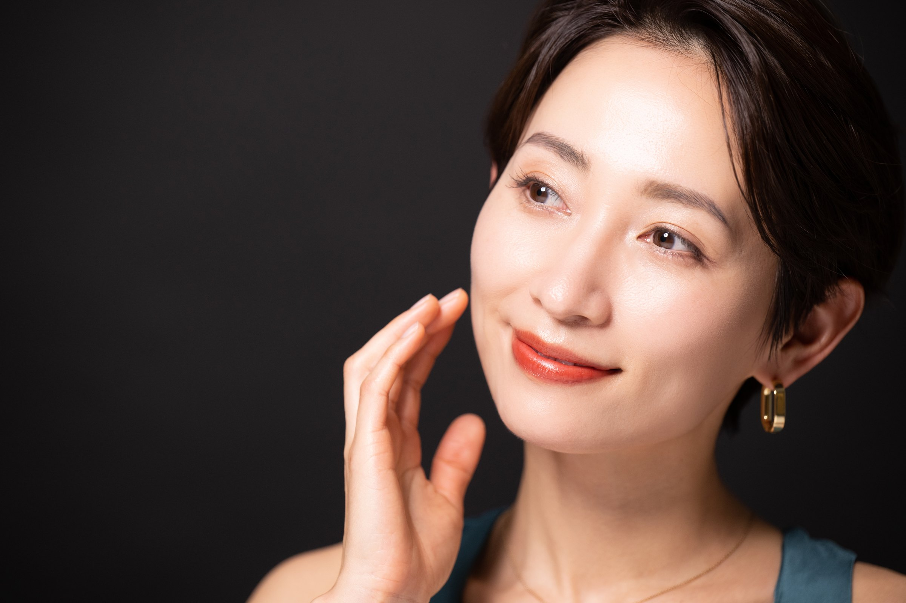
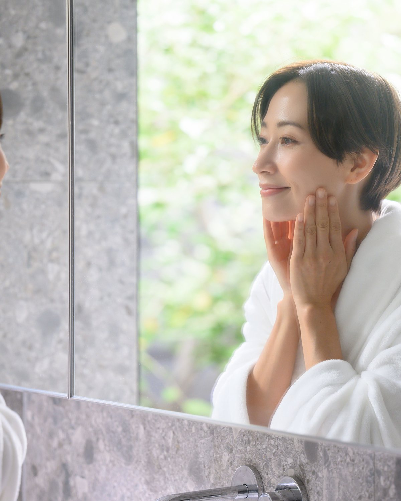
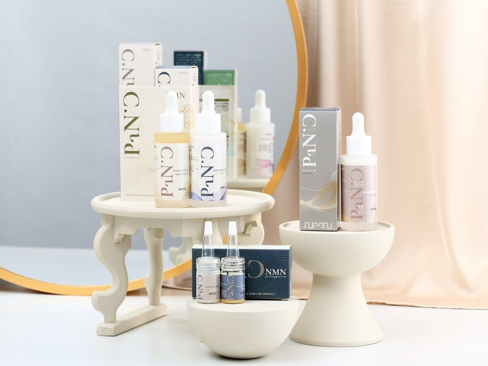
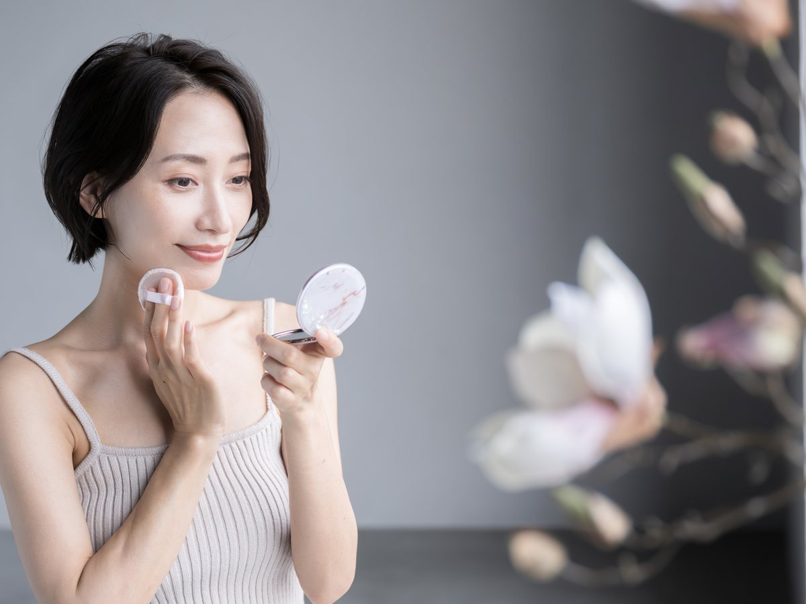
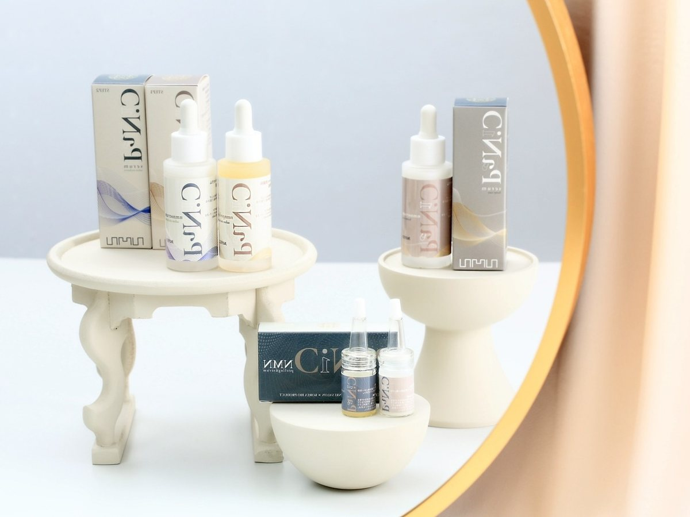
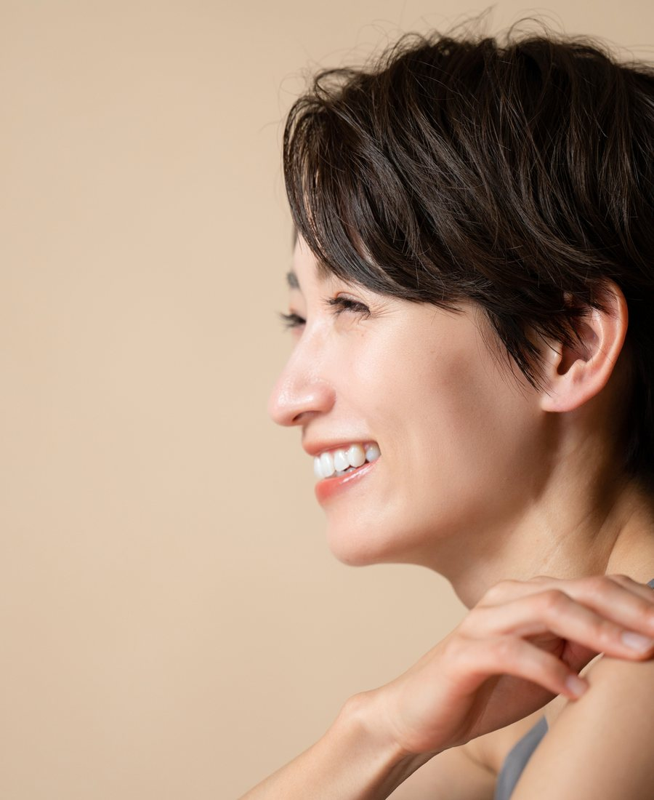

低刺激設計
AHA・BHA・PHAに続く第四世代のLA成分で、敏感に傾きやすい大人の肌にも丁寧に。

第四世代ピーリング
セラム導入まで一続きに
30代からの肌育メンテナンス
Concept
LUMIROAは、「Luminous」と「Road」から生まれた名前です。肌と人生がこれから明るく輝いていく道を、そっと一緒に歩む場所でありたいという想いを込めました。
目指すのは、一時的なつやではなく、何度も鏡を見たくなる素肌。韓国美容の機能性と、深く休まる手技の余韻を重ね、年齢を重ねた肌に落ち着いて向き合います。

Treatment
従来のピーリングに抱かれやすい乾燥感や刺激感に配慮し、不要な角質をやさしく整えたあと、セラムをしっかり届ける流れまでを一つの施術として設計しています。
AHA・BHA・PHAに続く第四世代のLA成分で、敏感に傾きやすい大人の肌にも丁寧に。
つや、なめらかさ、メイクのり。直後だけでなく、数日後の肌感まで楽しみに。
ピーリング後の肌を守りながら、うるおいとハリ感のためのセラム導入へ。

Signature Care
洗顔、ピーリング、LED、セラム導入、仕上げまで。肌を観察しながら、その日の状態に合わせて丁寧に進めます。
Flow
肌状態や美容医療歴、普段のケアを確認します。
筆とホットタオルで、肌に負担をかけずに整えます。
低刺激のピーリングを塗布し、LEDでじっくり浸透を促します。
専用機器でセラムを入れ込み、もちっとした仕上がりへ。
施術後の保湿や日焼け対策まで、無理なく続く形でお伝えします。



Access
ご予約はHot Pepper Beautyより承ります。
予約ページへ肌が変われば、人生が変わる。
Hot Pepper Beautyで予約